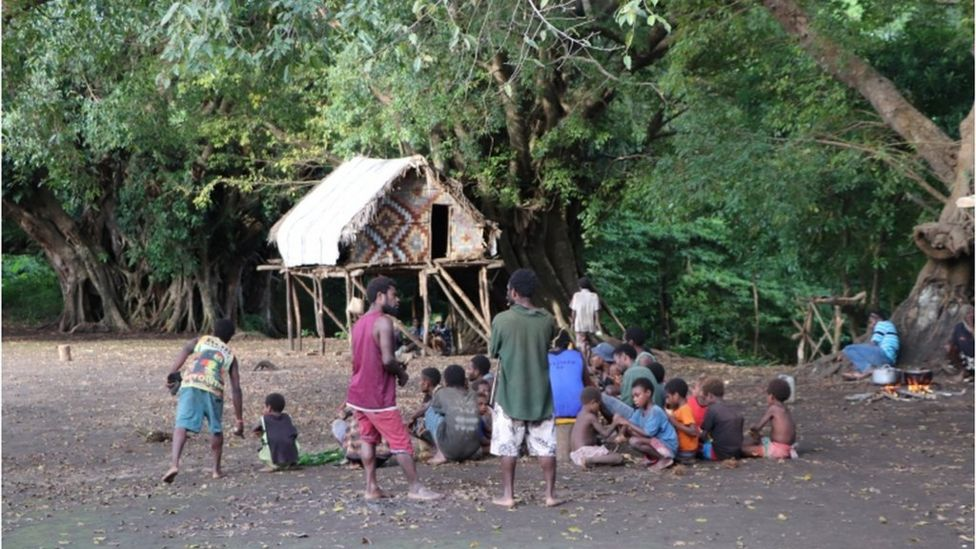

You have paid the tax by submitting the annual income tax return. But the tax office is not keeping your
account. Tax officials are demanding additional taxes.
There has been a tax appeal or a
case in the court. Day after day you can't finish the tax problem. But you can solve it out of court if you
want. Alternative
dispute resolution can take advantage of. The National Board of Revenue (NBR) has set up an alternative
dispute resolution system.
To get into alternative dispute resolution, you must first get permission from where your tax case is
(appellate authority or court). After giving permission, you have to apply in the prescribed form of NBR.
This application must be submitted to the appellate authority or court. In that application form you have to
give your name, address, tax identification number (TIN), name of tax region and circle, tax year to be
considered, comment of income tax authority, argument in favor of taxpayer's claim. If necessary, the
required documents should be submitted along with the application form. Five copies of the application must
be submitted to the court or appellate authority within 30 days of being allowed to settle the alternative
dispute.?
The court or appellate authority will send the application to the National Board of Revenue (NBR) within three working days of receiving the application from the taxpayer. The NBR will then send it to the concerned commissioner within three working days. The Commissioner shall appoint a Deputy Commissioner and an officer above him to settle the matter. As long as there is an alternative dispute resolution system, the case will be adjourned in court. The NBR has a four-member support panel to assist taxpayers in resolving alternative disputes. The panel includes three former members of the NBR and a representative of the FBCCI, the apex body of businessmen. Remember, you have to pay 500 rupees as application fee while applying. And as much as there is a dispute over income tax, 5 percent of the money has to be deposited as a supporter's fee. For example, if there is a dispute over the income tax equal to 1 lakh rupees, 5 thousand rupees has to be submitted as a supporter fee. However, the NBR has fixed a minimum fee of Tk 2,500 and a maximum of Tk 25,000. However, in case of filing a case in the Appellate Tribunal, the payment of 10 per cent of the opposing tax does not apply to the alternative dispute resolution system. Remember, it is not mandatory to accept an alternative dispute resolution. Then again the dispute has to be settled in the conventional system. The first alternative dispute resolution system was introduced in the 2012-13 financial year. In the next 6 years, 946 income tax disputes have been settled. 10 thousand 617 crore is involved with these settlements. Of the 598 cases settled in alternative disputes, both sides agreed. Partially agreed in 150 cases. And in 199 cases no one could agree.
The devotees are marking an auspicious bathing day on Monday at the Kumbh Mela religious festival in
Haridwar
city in the Himalayan state of Uttarakhand.
Officials say they are struggling to impose safety norms due to huge crowds.
Hindus believe the river is holy and bathing in it will cleanse them of their sins and bring salvation.
The Kumbh Mela takes place every 12 years and the venue is chosen from amongst four cities, including
Allahabad, Haridwar, Nasik and Ujjain.
Haridwar's turn to host the gathering came amid a sharp rise in the number of coronavirus infections, with
India consistently reporting more than 100,000 cases daily in the past few weeks.
On Monday, India logged more than 168,000 new cases, overtaking Brazil to become the country with the
second-highest number of cases globally.
With the total case tally of more than 13.5 million cases, India is now only behind the United States which
has reported more than 31 million cases. With 13.4 million cases, Brazil is now at number three.
Health experts had appealed for the Kumbh Mela festival to be cancelled, but the government went ahead
saying safety rules would be followed.?
A senior police official told ANI news agency that it was very difficult to ensure social distancing on the river banks. "We are continuously appealing to people to follow Covid-appropriate behaviour. But due to the huge crowd, it is practically not possible to issue challans [fines]," inspector general of police Sanjay Gunjyal said. He said that a "stampede-like situation" could arise if the police tried to enforce social distancing on the river banks. Officials said by noon more than 2.1 million devotees had bathed in the river, with many more expected to follow suit. Monday - Somvati Amavasya - marks the biggest bathing day during the two-month-long festival. The government had earlier said that only people with Covid negative reports would be allowed at the festival and strict measures like social distancing would be followed. But a number of people, including top saints, have already tested positive. This has given rise to fears that Monday's bathing day will help the infection spread faster among the devotees and that some of them could also take the virus back to their cities and villages in other parts of the country.
China's top disease control official has said the efficacy of the country's Covid vaccines is low, in a
rare admission of weakness.
In a press conference, Gao Fu added that China was considering mixing vaccines as a way of boosting
efficacy.
China has developed four different vaccines approved for public use, though some trials abroad had suggested
efficacy as low as 50%.
Mr Gao later said his comments had been misinterpreted.
More than 100 million people in China have received at least one shot of the vaccine.
Beijing has insisted the jabs are effective and said in March that obtaining visas would be easier for
foreigners who have received a Chinese vaccine.
The court or appellate authority will send the application to the National Board of Revenue (NBR) within three working days of receiving the application from the taxpayer. The NBR will then send it to the concerned commissioner within three working days. The Commissioner shall appoint a Deputy Commissioner and an officer above him to settle the matter. As long as there is an alternative dispute resolution system, the case will be adjourned in court. However, the NBR has fixed a minimum fee of Tk 2,500 and a maximum of Tk 25,000. However, in case of filing a case in the Appellate Tribunal, the payment of 10 per cent of the opposing tax does not apply to the alternative dispute resolution system. Remember, it is not mandatory to accept an alternative dispute resolution. Then again the dispute has to be settled in the conventional system. The first alternative dispute resolution system was introduced in the 2012-13 financial year. In the next 6 years, 946 income tax disputes have been settled. 10 thousand 617 crore is involved with these settlements. Of the 598 cases settled in alternative disputes, both sides agreed. Partially agreed in 150 cases. And in 199 cases no one could agree.
As Britons mourn the death of Prince Philip, they are joined by a tribal community on a Pacific island
half a world away.
For decades, two villages on the Vanuatuan island of Tanna have revered the Duke of Edinburgh as a god-like
spiritual figure.
A formal period of mourning is now under way.
On Monday, scores of tribespeople gathered in a ceremony to remember Prince Philip.
"The connection between the people on the island of Tanna and the English people is very strong... We are
sending condolence messages to the Royal Family and the people of England," said tribal leader Chief Yapa,
according to Reuters news agency.
For the next few weeks, villagers will periodically meet to conduct rites for the duke, who is seen as a
"recycled descendant of a very powerful spirit or god that lives on one of their mountains", says
anthropologist Kirk Huffman who has studied the tribes since the 1970s.
They will likely conduct ritualistic dance, hold a procession, and display memorabilia of Prince Philip,
while the men will drink kava, a ceremonial drink made from the roots of the kava plant.
This will culminate with a "significant gathering" as a final act of mourning. "There will be a great deal
of wealth on display" which would mean yams and kava plants, says Vanuatu-based journalist Dan McGarry.
"And also pigs, because they are a primary source of protein. I would expect numerous pigs to be killed for
the ceremonial event."
Monday's meeting saw a couple of hundred people gather under giant banyan trees.
There were speeches remembering Prince Philip, but also discussion about a possible successor. At sunset the
men drank kava.
The BBC understands that a private message to Queen Elizabeth has been given to journalists at the scene,
who will convey it to British officials.
For half a century, the Prince Philip Movement thrived in the villages of Yakel and Yaohnanen - at its height, it had several thousand followers, though numbers are thought to have dwindled to a few hundred. The villagers live a simple life in Tanna's jungles, much as their ancestors did. Wearing traditional dress is still common, while money and modern technology such as mobile phones are seldom used within their own community. Though they live only several kilometres from the nearest airport, "they just made an active choice to disavow the modern world. It's not a physical distance, it's a metaphysical distance. They're just 3,000 years away," says Mr McGarry, who has frequently met the villagers.
The villagers' centuries-old "kastom", or culture and way of life, sees Tanna as the origin of the world and aims to promote peace - and this is where Prince Philip has played a central role. Over time, the villagers have come to believe he is one of them - the fulfilment of a prophecy of a tribesman who has "left the island, in his original spiritual form, to find a powerful wife overseas", says Mr Huffman. "Ruling the UK with the help of the Queen, he was trying to bring peace and respect for tradition to England and other parts of the world. If he was successful, then he could return to Tanna - though one thing preventing him was, as they saw it, white people's stupidity, jealousy, greed and perpetual fighting." With his "mission to literally plant the seed of Tanna kastom at the heart of the Commonwealth and empire", the duke was thus seen as the living embodiment of their culture, says Mr McGarry. "It's a hero's journey, a person who sets off on a quest and literally wins the princess and the kingdom."